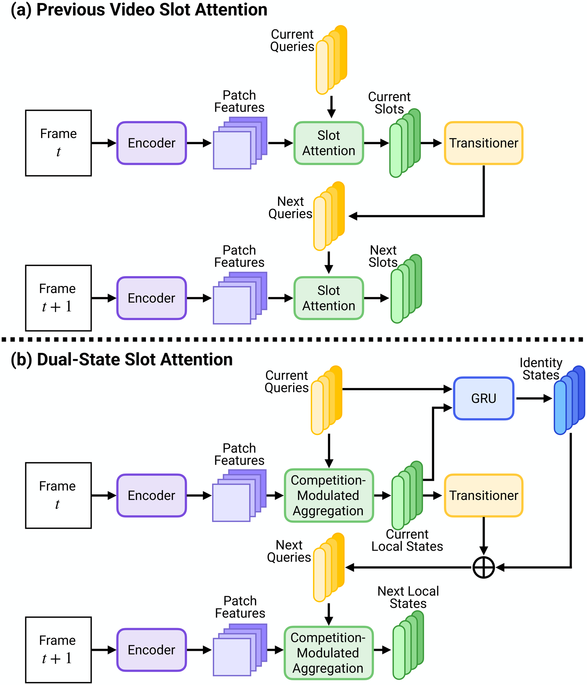

1University of Arkansas, Fayetteville, USA
*Equal contribution
Published at ACM Multimedia 2026
Unsupervised video object-centric learning aims to decompose dynamic scenes into persistent, object-level representations without supervision. Existing slot-based methods struggle to maintain stable object identity under rapid motion and partial occlusion. They encode both the per-frame appearance of an object and its identity across frames in a single slot vector, so reconstruction wants the slot to follow transient visual changes while temporal consistency wants it to ignore them. That conflict leads to slot swapping. Token renormalization in Slot Attention can also amplify a weakly attending slot until it absorbs pieces of other objects. We propose Dual-State Slot Attention (DSSA), a fully self-supervised framework that separates appearance from identity. Each slot has a local state for the current frame and an identity state for information that should persist. The identity state is updated by a learned recurrent transition that filters the local state, and competition-modulated aggregation down-weights updates from weakly matching slots. On MOVi-C, MOVi-D, and YouTube-VIS, DSSA improves segmentation quality and temporal consistency, and the learned slots also help object recognition and video dynamics prediction.

Positioning. Previous methods pass one slot from frame to frame. DSSA keeps a local state for appearance and an identity state for tracking.
| Method | MOVi-C | MOVi-D | YouTube-VIS | |||||||||
|---|---|---|---|---|---|---|---|---|---|---|---|---|
| ARI ↑ | FG-ARI ↑ | mBO ↑ | mIoU ↑ | ARI ↑ | FG-ARI ↑ | mBO ↑ | mIoU ↑ | ARI ↑ | FG-ARI ↑ | mBO ↑ | mIoU ↑ | |
| VideoSAUR | 41.9 | 53.3 | 16.1 | 14.8 | 22.5 | 40.0 | 11.6 | 10.8 | 33.8 | 49.2 | 29.9 | 29.7 |
| SlotContrast | 64.6 | 59.9 | 27.7 | 25.8 | 45.3 | 63.9 | 26.7 | 25.1 | 37.2 | 49.4 | 33.0 | 32.8 |
| DIASvideo | – | – | – | – | 37.2 | 64.7 | 25.9 | 22.7 | 38.7 | 52.1 | 33.3 | 34.6 |
| RandSF.Qtsim | 64.0 | 66.3 | 28.4 | 26.1 | 41.2 | 72.0 | 27.1 | 25.4 | 46.0 | 60.4 | 39.4 | 38.5 |
| RandSF.Qssc | 65.4 | 67.4 | 29.2 | 26.8 | 41.6 | 77.5 | 27.4 | 25.6 | 40.1 | 58.0 | 37.6 | 37.2 |
| DSSA | 67.6 | 67.6 | 29.9 | 27.5 | 48.7 | 81.2 | 29.3 | 27.8 | 55.0 | 70.1 | 45.8 | 44.7 |
Note: Mean over 3 seeds with a frozen DINOv2 ViT-S/14 encoder at 256×256. Metrics are computed on the full video, so a slot swap lowers ARI and FG-ARI. 11, 21, and 7 slots on MOVi-C, MOVi-D, and YouTube-VIS.
SlotFormer on frozen YouTube-VIS slots. The identity state is trained for temporal consistency.
| Method | ARI ↑ | FG-ARI ↑ | mBO ↑ | mIoU ↑ |
|---|---|---|---|---|
| SlotContrast | 37.9 | 29.5 | 33.2 | 33.1 |
| RandSF.Qtsim | 46.6 | 38.2 | 43.7 | 43.1 |
| DSSA (identity) | 66.6 | 52.3 | 52.7 | 51.4 |
A two-layer MLP on frozen YouTube-VIS slots. The local state is trained to reconstruct the current frame.
| Method | Top-1 ↑ | Top-3 ↑ |
|---|---|---|
| SlotContrast | 19.9 | 49.1 |
| RandSF.Qtsim | 26.1 | 60.9 |
| DSSA (local) | 28.4 | 66.6 |
Fox. DSSA keeps one slot on the animal. RandSF.Q splits the ears, face, and body. DSSA is on the left.
If you find this work useful, please cite our paper:
@inproceedings{tran2026dualstate,
title = {Dual-State Slot Attention: Decoupling Appearance and Identity for Video Object-Centric Learning},
author = {Tran, Sieu and Nguyen, Duc Minh and Vo, Hao and Vo, Khoa and Le, Ngan},
booktitle = {Proceedings of the 34th ACM International Conference on Multimedia},
series = {MM '26},
year = {2026},
address = {Rio de Janeiro, Brazil},
publisher = {Association for Computing Machinery},
}